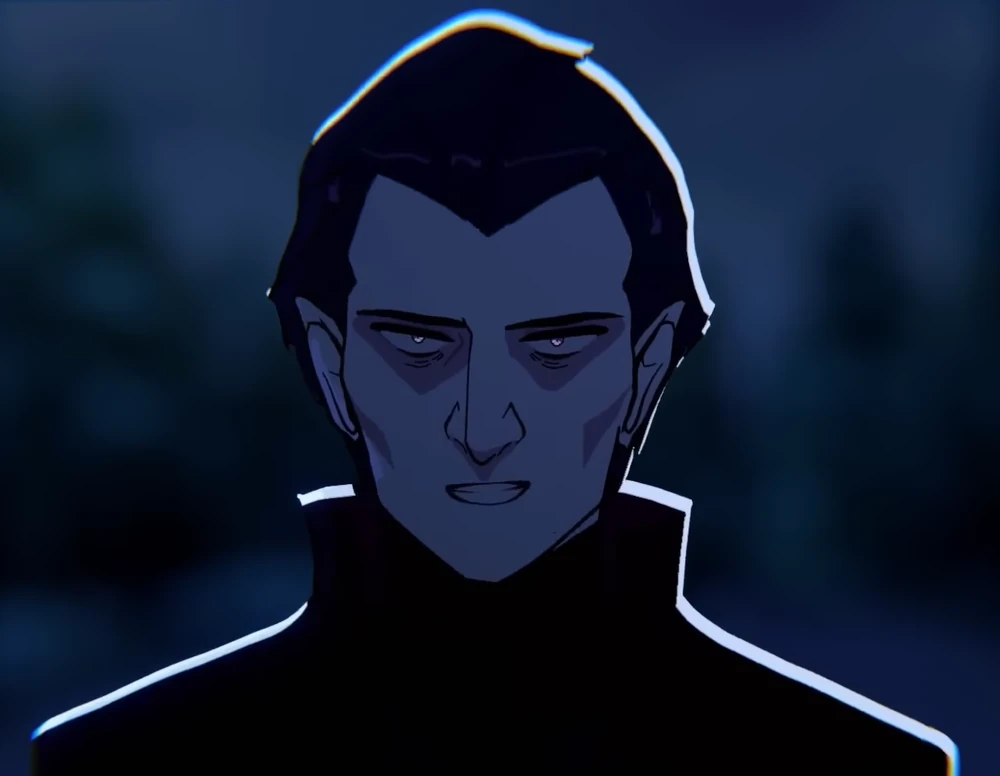

PERSONNEL DATABASE / 004
THE PEOPLE BEHIND THE MYSTERY
Four names. Different stories. Connections that are nor always what they seem.
PERSONNEL FILE / 001
MARION
STATUS:
ROLE: PROTAGONIST
SPECIES: HUMAN
AGE: 19 (SEASON 1) / 20 (SEASON 2)
FILE NOTES: A human caught in the middle of a vampire mystery.
STATUS: ALIVE
RELATIONSHIP: JAKE DONOVAN
ALIAS: MY LADY (MAGNUS)
ALIAS: LITTLE FLOWER (LEONARD)
PERSONNEL FILE / 002
MAGNUS
STATUS:
ROLE: DEUTERAGONIST
PERSONALITY: DISCIPLINED / SECRETIVE
RELATIONSHIP: MARION — LOVE INTEREST
FAMILY: LEONARD — TWIN BROTHER
RIVAL: JAKE
ABILITIES: ENHANCED STRENGTH / SPEED / SIGHT
KNOWN OBJECT: AMETHYST RING
FILE NOTES: A disciplined vampire whose protective nature hides more than he reveals.
PERSONNEL FILE / 003
JAKE
STATUS:
ROLE: TRITAGONIST
OCCUPATION: POLICE DETECTIVE
AGE: 23 (SEASON 1) / 24 (SEASON 2)
SPECIES: HUMAN
STATUS: ALIVE / CURSED (SEASON 2)
RELATIONSHIP: MARION — GIRLFRIEND
RIVAL: MAGNUS
FILE NOTES: An analytical detective whose loyalty can push him into impulsive decisions.
PERSONNEL FILE / 004
LEONARD

STATUS:
ROLE: MAIN ANTAGONIST
CONNECTION: MAGNUS — TWIN BROTHER
CLASSIFICATION: ANTAGONIST
FILE NOTES: A central figure behind the darker side of the story.